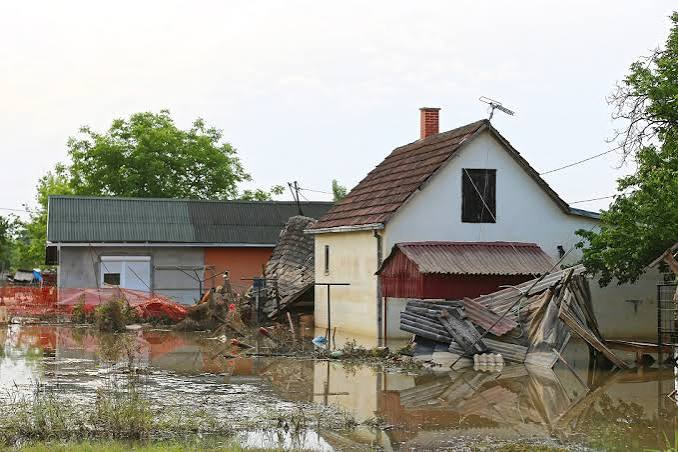
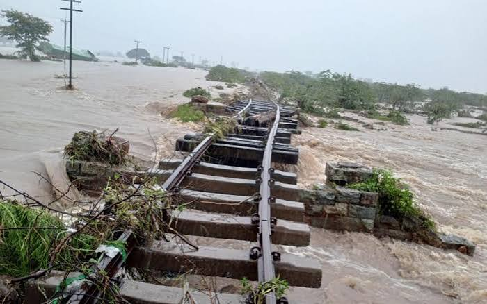

What Causes Floods?
Floods are driven by extreme weather phenomena and human-altered landscapes. Click any card to explore multimedia breakdowns.
Extreme Rainfall
Heavy or continuous rainfall overwhelms natural soil absorption limits and municipal drainage systems.
River & Coastal Overflows
Rain or melting snow causes rivers to rise above their banks, while ocean storms push tides inland.
Urbanization & Concrete
Roads and buildings stop rainwater from soaking into the earth, sending huge amounts of runoff into drains.
Deforestation
Removing trees eliminates roots that slow down water runoff, letting floodwaters surge rapidly.
Dam and Levee Failures
Structural damage or heavy water pressure can break dams and flood barriers unexpectedly.
Consequences of Flooding
The severe impacts of floods disrupt human lives, economic stability, and fragile ecosystems. Explore the consequences and discover practical solutions below.

Severe Property & Infrastructure Destruction
Floodwaters cause extreme kinetic and hydrostatic forces capable of damaging heavy infrastructure.
| Damage to Buildings | Floodwater weakens building foundations, damages walls, and may cause buildings to collapse. |
|---|---|
| Road and Bridge Destruction | Strong flood currents can damage roads, destroy bridges, and make transportation difficult. |
| Electricity Disruption | Floodwater can damage electrical systems, causing power outages in homes and communities. |
| Water Supply Contamination | Flooding can damage water supply systems and contaminate drinking water with sewage and pollutants. |
Health Risks and Disease
Flooding creates hazardous sanitary conditions and increases the risk of disease outbreaks.
| Diarrhea and Vomiting | Drinking contaminated water can cause stomach infections, diarrhea, and vomiting. |
|---|---|
| Dengue Fever and Malaria | Mosquitoes breeding in stagnant floodwater can spread diseases that cause fever and other serious symptoms. |
| Leptospirosis | Exposure to contaminated floodwater can cause fever, muscle pain, and in severe cases, kidney or liver damage. |
| Electric Shock | Contact with damaged electrical wires or equipment in floodwater can cause serious injury. |
| Respiratory Problems | Mold in flooded buildings can trigger asthma, allergies, and breathing difficulties. |

Displacement & Emotional Strain
Flooding can force families to leave their homes and create long-term social and emotional challenges.
| Homelessness | Families may lose their homes and be forced to live in temporary shelters or with relatives. |
|---|---|
| Anxiety and Stress | Losing homes and belongings can cause fear, worry, and emotional distress. |
| Social Isolation | Flooded schools can interrupt lessons, delay education, and prevent students from attending classes. |
| Emotional Challenges | Experiencing major losses and uncertainty can negatively affect a person's mental well-being. |
How Can We Reduce Flood Risks?
Proactive civil engineering and community actions lower disaster risks. Click any strategy to view videos and detailed technical breakdowns.
1. Modernized Drainage
Expand storm sewers and regularly clean gutters to carry away intense rainwater fast.
2. Green Infrastructure
Construct urban parks, wetlands, and soil pockets that absorb rainwater naturally.
3. Flood Defenses
Build reinforced seawalls and river levees to block rising floodwaters from urban zones.
4. Early Warnings
Deploy weather alerts and automated broadcast notifications for immediate evacuation readiness.
River Overflow & Coastal Storm Surges

Deep Dive Analysis:
River floods happen when heavy rainfall causes rivers to rise above their banks. Coastal storm surges occur when strong storms push seawater onto normally dry land.
Preventative Measures:
- Construct and maintain flood walls and levees in suitable high-risk areas.
- Limit construction in low-lying floodplains.
- Restore riverbank vegetation to help protect soil.
Urbanization & Impervious Surfaces

Deep Dive Analysis:
As natural soil and green spaces are replaced with concrete and asphalt, less rainwater can soak into the ground. Water flows across these hard surfaces, potentially overwhelming drainage systems.
Urban Engineering Solutions:
- Use permeable pavement in suitable areas.
- Include rooftop gardens and rain gardens in city planning.
- Improve stormwater storage and drainage systems.
Ready to Protect Yourself?
Now that you understand the causes and consequences of floods, learn how to prepare before one happens.
Learn How to Prepare